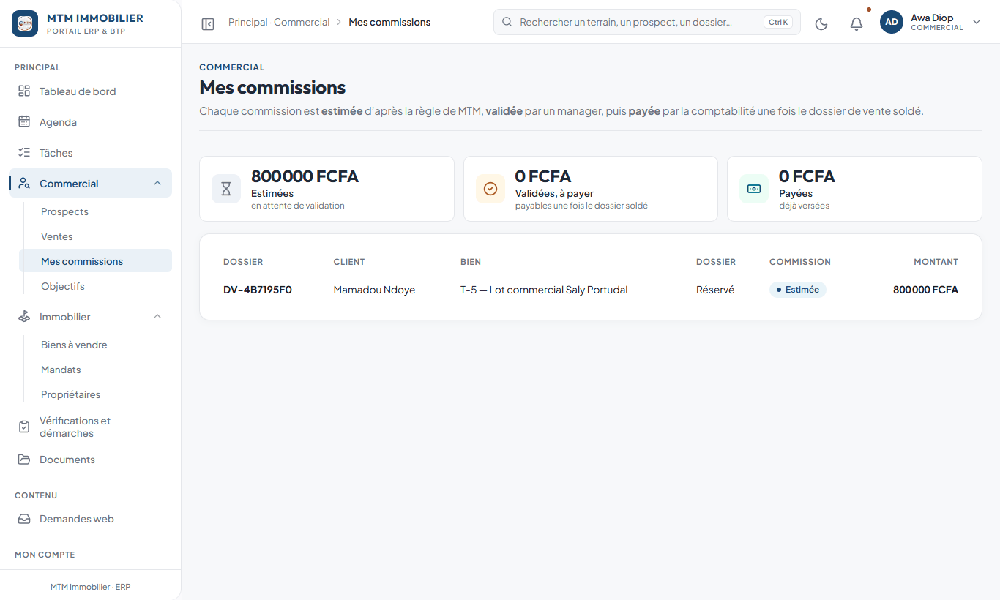

Ce guide en deux minutes
Ce guide est le vôtre : il ne parle que de ce qu’un commercial fait dans le back-office. Les écrans de la comptabilité, de la direction ou de l’administration n’y sont pas : vous ne les voyez pas.
À la fin de la lecture, vous saurez :
- vous connecter et protéger votre compte ;
- lire votre tableau de bord Mon activité chaque matin ;
- créer un prospect, le relancer, le faire avancer jusqu’à la vente ;
- proposer un bien, organiser une visite et noter le retour du client ;
- ouvrir un dossier de vente, réserver un bien, enregistrer un paiement ;
- régler les alertes que vous recevez, et travailler depuis votre téléphone.
À retenir — Vous ne pouvez pas casser grand-chose : l’application demande confirmation avant tout geste sensible et garde l’historique de chaque action. En cas de doute, demandez à votre responsable commercial.
Se connecter et protéger son compte
- Ouvrez l’adresse du back-office que MTM vous a donnée.
- Saisissez votre e-mail et votre mot de passe, puis Se connecter.
- À la première connexion, choisissez un nouveau mot de passe : 12 caractères au minimum, avec une majuscule, une minuscule, un chiffre et un caractère spécial.

- Mot de passe oublié ? Cliquez sur le lien sous le formulaire : un e-mail vous permet d’en choisir un nouveau.
- Après plusieurs erreurs, le compte se bloque quelques minutes : patientez, ou demandez à un administrateur.
- Sur un ordinateur ou un téléphone partagé, déconnectez-vous en fin d’usage (votre nom en haut à droite).
Découvrir l’écran

| Zone | À quoi elle sert |
|---|---|
| Menu à gauche | Aller d’un module à l’autre. Vous y trouvez Mon travail, Commercial, Biens, Location et services. |
| Barre de recherche | Retrouver un prospect, un bien, un dossier ou une page. Raccourci : Ctrl + K. |
| Point d’interrogation | Ouvre ce guide. |
| Cloche | Vos alertes. Un point rouge signale du nouveau. |
| Votre nom | Vos notifications, la sécurité de votre compte, la déconnexion. |
Les pastilles rouges du menu comptent ce qui vous attend (tâches en retard, demandes du site non lues…). Les couleurs ont partout le même sens : vert = tout va bien, bleu = en cours, orange = à surveiller, rouge = à traiter maintenant.
Les menus que vous utilisez
| Rubrique | Ce que vous y faites |
|---|---|
| Mon travail | Tâches, Agenda, Documents. |
| Commercial | Demandes du site (les contacts reçus du site public), Prospects, Dossiers de vente. |
| Biens | Biens à vendre, Mandats, Propriétaires. |
| Location et services | Gestion locative (vos biens en location), Vérifications et démarches. |
Un sujet à plusieurs pages (par exemple Dossiers de vente) n’a qu’une ligne dans le menu : ses pages sont les onglets affichés en haut de l’écran.
Mon tableau de bord
À la connexion, vous arrivez sur Mon activité.
- Les boutons du haut vont droit à l’essentiel : Nouveau prospect, Mes prospects, Mes biens, Mes ventes, Mon agenda.
- Les quatre cartes : prospects actifs, relances (dues aujourd’hui ou en retard), ventes soldées ce mois-ci, tâches ouvertes. Un chiffre en rouge demande une action.
- Mon objectif du mois : où vous en êtes par rapport à l’objectif fixé par votre responsable. Les ventes engagées sont les dossiers réservés, en paiement ou soldés ; le chiffre d’affaires compte les paiements validés.
- Mes commissions : estimées, validées à payer, payées, avec un lien voir le détail.
- Mon pipeline : vos prospects par étape. Le total est écrit au centre de l’anneau.
- En bas : prospects à relancer, visites à venir, agenda du jour.
L’onglet Vue générale donne, en plus, l’état de chaque module auquel vous avez accès.
Ma journée type
Le matin (5 minutes)
- Ouvrez Mon activité.
- Regardez Relances et Mes tâches : traitez d’abord ce qui est en retard (en rouge).
- Consultez Visites à venir et Mon agenda.
Pendant la journée
- Après chaque appel ou rendez-vous : ouvrez la fiche, ajoutez une note et programmez la prochaine relance.
- Un nouveau contact arrive (téléphone, WhatsApp, réseaux sociaux) : créez-le tout de suite. Trente secondes suffisent.
- Un client veut visiter : proposez-lui le bien depuis sa fiche.
Le soir (5 minutes)
- Les visites effectuées ont-elles leur retour client ?
- Chaque prospect actif a-t-il une prochaine action avec une date ? Le compteur « Sans prochaine action » doit rester à zéro.
Les prospects
Un prospect est une personne intéressée par un bien, de la première prise de contact jusqu’à la vente. Ils se trouvent dans Commercial › Prospects.

La liste s’affiche en Cartes (une carte par personne, avec appel et WhatsApp en un geste) ou en Tableau. Le bouton en haut à droite bascule de l’un à l’autre, et votre choix est retenu.
Créer un prospect
- Commercial › Prospects, puis Nouveau prospect.
- Remplissez au minimum le nom et un téléphone ou un e-mail : sans cela, impossible de le recontacter.
- Cochez « Ce numéro est joignable sur WhatsApp » si c’est le cas : le bouton WhatsApp de la fiche en dépend.
- Si vous le savez, précisez la source (Facebook, recommandation…) et le niveau d’intérêt.
- Le projet du client (zone, budget, surface…) est facultatif : cliquez sur Renseigner aussi le projet du client ou faites-le plus tard.
- Créer le prospect. Il démarre à l’étape Nouveau.

À retenir — Un nom et un moyen de contact suffisent pour commencer. Le reste se complète au fil des échanges. Pour un client de la diaspora, renseignez son pays de résidence : il aide à penser au décalage horaire et au paiement à distance.
Retrouver un prospect
- Les pastilles au-dessus de la liste filtrent d’un clic : À relancer aujourd’hui, Relances en retard, Sans prochaine action, Visites à venir, Retours de visite à saisir, Tous les actifs.
- Les cartes de chiffres et le pipeline sont cliquables.
- La recherche accepte un nom, un téléphone, une zone.
La fiche du prospect

| Élément | Utilité |
|---|---|
| Appeler / WhatsApp | Lance l’appel ou ouvre la conversation. |
| Ajouter une note | Garde une trace de ce qui s’est dit. |
| Programmer une relance | Fixe la prochaine action et sa date. |
| Changer d’étape | Fait avancer le prospect. |
| Modifier | Corrige ou complète la fiche. |
| La frise d’étapes | Montre où en est le prospect. |
| Actions à faire | Appels, relances, rendez-vous à venir. Cochez une action quand elle est faite. |
| Biens proposés | Les biens présentés, avec visite et retour du client. |
La règle d’or : toujours une prochaine action
Important — Aucun prospect actif ne reste sans prochaine action ni date de relance. C’est la règle de MTM : c’est elle qui évite d’oublier un client.
Cliquez sur Programmer une relance :

- Écrivez ce qu’il faut faire (« Rappeler après la visite », « Envoyer le plan »).
- Choisissez quand : un raccourci (Demain, Dans 3 jours, Dans 1 semaine, Dans 2 semaines) ou une date au calendrier.
- Enregistrer.
La relance apparaît dans « Actions à faire », sur votre tableau de bord et dans votre agenda, et vous recevez un rappel.
Faire avancer un prospect : les étapes
Cliquez sur Changer d’étape, puis choisissez la nouvelle étape.

| Étape | Ce que cela veut dire |
|---|---|
| Nouveau | Prospect enregistré : à contacter rapidement. |
| Contacté | Premier échange réalisé, besoin pas encore précisé. |
| Qualifié | Zone, surface, budget et objectif sont connus. |
| Visite programmée | Un rendez-vous de visite est fixé. |
| Visite effectuée | La visite a eu lieu : saisissez le retour du client. |
| En réflexion | Le client réfléchit : gardez le contact. |
| À relancer | Sans nouvelle : une relance est à programmer. |
| Négociation | Discussion sur le prix et les conditions. |
| Réservé | Acompte versé ou en cours : le bien lui est bloqué. |
| Vente soldée | Le prix est intégralement payé : le prospect est devenu client. |
Trois étapes de sortie demandent un motif, conservé dans l’historique : Refusé (le client ne donne pas suite), Projet abandonné, Injoignable. Soyez bref et précis : « budget insuffisant », « a acheté ailleurs ».
Vous vous êtes trompé d’étape ? Cliquez à nouveau sur Changer d’étape et choisissez la bonne. L’historique garde la trace des changements.
Les demandes du site
Les personnes qui écrivent depuis le site public de MTM arrivent dans Commercial › Demandes du site. Une pastille rouge sur le menu compte les demandes non lues.

Chaque demande indique le nom, l’e-mail, le téléphone, le sujet, le message et, s’il y en a un, le bien concerné. Trois actions :
| Action | Ce qu’elle fait |
|---|---|
| Répondre | Envoie votre réponse par e-mail et la fait apparaître dans l’espace client du demandeur. |
| Créer le prospect | Crée la fiche prospect : vous pouvez ensuite rappeler la personne et la suivre. |
| Ouvrir le prospect | Quand le contact est déjà dans vos prospects, ouvre sa fiche. |
À retenir — Répondez dans la journée et créez le prospect : une demande du site est un contact chaud, et aucun contact ne doit rester sans suite. Une demande sur une annonce de location est traitée par la gestion locative.
Les biens
Biens › Biens à vendre : les terrains, villas et appartements suivis par MTM.

- Les cartes de chiffres du haut donnent le bilan : biens référencés, disponibles, réservés, vendus, archivés, fiches à compléter. Un clic filtre la liste.
- Les pastilles Nature (terrain, villa, appartement…) et Statut (brouillon, disponible, réservé, vendu, suspendu) filtrent d’un clic, avec le nombre de biens dans chaque statut.
- La recherche accepte une référence, un matricule, une localité, un vendeur, un téléphone.
- Le bouton à droite bascule entre cartes avec photo et tableau.
- Disponible = publié sur le site de MTM. Un bien réservé ou vendu n’y apparaît plus.

La fiche réunit prix, superficie, situation juridique, localisation, photos et documents : tout ce qu’il faut pour présenter le bien à un client.
Attention — Cette liste montre les biens dont vous êtes responsable. Pour présenter ou vendre le bien d’un collègue, passez par Proposer un terrain (fiche du prospect) ou Ouvrir un dossier : ces deux fenêtres proposent tous les biens disponibles.
Astuce — Photographiez chaque bien lors de la visite et ajoutez les photos à sa fiche : une fiche complète (photos, position GPS, prix) se vend mieux et alimente le site public.
Créer un bien
- Biens à vendre › Nouveau bien.
- Étape 1 : la nature du bien et son nom (le matricule, par exemple T-2026-0014, est attribué automatiquement), le propriétaire, puis la situation juridique.
- Étape 2 : l’adresse, la position GPS (astuce : copiez les coordonnées de Google Maps dans le champ Latitude), la surface et l’environnement.
- Étape 3 : le prix public et la publication. Seul le prix public est affiché sur le site.
- Étape 4 : les photos et les documents.
- Créer le bien.
Les champs facultatifs sont rangés sous Plus de détails : ouvrez-les seulement si vous avez l’information. Seuls le nom et les statuts sont obligatoires.
Proposer un bien et organiser une visite
Depuis la fiche du prospect, zone Biens proposés :
- Proposer un terrain.
- Dans Visite et retour client, choisissez le bien proposé.
- Renseignez le rendez-vous : date proposée, date confirmée, heure, lieu, accompagnateur.
- Enregistrer.

Une date confirmée fait passer la visite en « programmée » : elle apparaît dans votre agenda.
Après la visite, rouvrez la fenêtre et remplissez Retour après la visite : le bien plaît-il ? Le prix est-il accepté ? Quelle est l’objection principale (prix, emplacement, distance, documents…) ? Le retour vous dit quoi répondre au client, évite de lui reproposer le même bien et montre ce qui bloque les ventes. Cochez Souhaite voir un autre bien pour en proposer un nouveau.
Les mandats et les propriétaires
- Biens › Propriétaires : les personnes qui confient leurs biens à MTM. Créez le propriétaire avant le bien.
- Biens › Mandats : l’autorisation donnée par un propriétaire de vendre ses biens. Un mandat peut être créé et modifié par vous ; joignez-y au minimum le contrat signé.
Important — Un mandat qui approche de sa fin vous prévient (30 jours avant par défaut). Renouvelez-le ou clôturez-le à temps : un bien sans mandat valide ne doit pas être proposé.
Le dossier de vente
Un dossier de vente suit une vente : un client + un bien. Il regroupe la réservation, les paiements, les documents et la commission. Il se trouve dans Commercial › Dossiers de vente.
Ouvrir un dossier
Deux façons de commencer :
- depuis la fiche du prospect, Ouvrir un dossier ;
- depuis Dossiers de vente, Nouveau dossier : une fenêtre demande d’abord pour quel client, puis le bien.

- Dans Bien concerné, tapez la référence, le nom ou la commune, puis cliquez sur le bien.
- Vérifiez le prix de vente prévisionnel : il est pré-rempli avec le prix public, à changer s’il a été négocié.
- Ajoutez des notes si besoin, puis Ouvrir le dossier.
Le dossier reçoit sa référence (« DV-… ») et s’ouvre aussitôt.
Suivre ses dossiers

Le bandeau orange signale ce qui demande votre attention (réservation qui expire bientôt, paiement à valider). La colonne À faire donne en une ligne la prochaine étape de chaque dossier.

Dans le dossier : le bandeau À faire sur ce dossier, les chiffres (prix, payé validé, reste dû), la liste de vos paiements et l’échéancier. Vous voyez les paiements et la commission de vos propres dossiers ; les chiffres globaux restent à la comptabilité et aux responsables.
Les statuts d’un dossier
| Statut | Signification |
|---|---|
| En cours | Dossier ouvert : le bien intéresse le client, rien n’est engagé. |
| Pré-réservé | Intention ferme, acompte pas encore versé : le bien reste visible sur le site. |
| Réservé | Acompte versé : le bien est bloqué pour ce client et retiré du site. |
| Paiement partiel | Une partie du prix est encaissée ; le solde reste dû. |
| Soldé | Prix intégralement payé : la vente est conclue. |
| Annulé | Dossier abandonné ; le bien redevient disponible. |
Changer le statut ne propose que les passages autorisés. Passer à Soldé exige que le prix soit payé et validé en totalité.
Réserver un bien
Cliquez sur Réserver le bien : indiquez l’acompte, la durée de blocage (en jours) et les conditions d’annulation. Tant que la réservation est active, le bien est bloqué pour ce client. À la date d’expiration, sans suite, le bien est libéré : l’application vous prévient avant.
Enregistrer un paiement
Cliquez sur Enregistrer un paiement :

- Montant reçu et mode de paiement (virement, espèces, mobile money, chèque…) : obligatoires.
- Vérifiez la date et indiquez la référence (numéro de virement, de reçu) : elle sert à retrouver le paiement sur le relevé.
- Enregistrer le paiement.
Important — Le paiement est enregistré « à valider ». Il ne compte dans le « payé » qu’une fois contrôlé par la comptabilité ou un responsable. Vous ne validez jamais vos propres paiements : deux personnes regardent chaque encaissement.
Documents et commission
- Les documents du dossier (contrat, reçus, pièces du client) s’ajoutent depuis le dossier, ou depuis Mon travail › Documents.
- Votre commission est estimée selon les règles de MTM, validée par un manager, puis payée une fois le dossier soldé.
- Dossiers de vente › Mes commissions liste chacune de vos commissions : le dossier, le client, le bien, l’étape (estimée, validée, payée) et le montant.

Annuler un dossier
Changer le statut › Annulé. Si le dossier a déjà des paiements validés, l’application demande ce qu’ils deviennent (acompte conservé selon les conditions de réservation, ou remboursé).
Attention — N’annulez pas un dossier déjà payé sans en parler à votre responsable.
La location, si elle fait partie de votre travail
La location est portée par les commerciaux : vous créez et suivez vos propres biens (fiche, bail, séjours, locataires, loyers) dans Location et services › Gestion locative, et vous ne voyez que les vôtres. La publication sur le site, la validation (résiliations, versements) et les sorties d’argent restent à la gestion locative.
Pour le détail pas à pas (créer un bien locatif, un bail, un séjour, encaisser un loyer), ouvrez le chapitre La gestion locative du guide complet.
Tâches, agenda et messages
Mon travail › Tâches liste ce que vous avez à faire, par qui et pour quand.

- Les trois compteurs du haut (en retard, pour aujourd’hui, à faire au total) sont aussi des filtres : un clic sur « en retard » ne montre que cela.
- Les onglets : Mes tâches et Confiées par moi.
- L’échéance change de couleur : rouge si elle est dépassée, orange le jour même.
- Cochez le rond à gauche quand la tâche est faite.
Créer une tâche : Nouvelle tâche, un titre clair, la priorité et la date limite, et le responsable si vous la confiez à quelqu’un (il est prévenu tout de suite).
Depuis la fiche d’un dossier (prospect, vente, mandat…), le bloc Tâches et rendez-vous crée une tâche liée à ce dossier.
Mon travail › Agenda rassemble vos rendez-vous, visites, appels et échéances. Les visites confirmées et les échéances de vos dossiers s’y ajoutent toutes seules.

Sur chaque fiche, le fil de discussion garde les échanges. Un message est soit une note interne (jamais lue par le client), soit un message au client (case Envoyer aussi au client).
Attention — Avant d’envoyer un message au client, relisez-le : il le recevra tel quel. Pour une remarque à l’équipe, utilisez une note interne.
Régler mes alertes
La cloche vous prévient quand quelque chose vous concerne : nouveau prospect, relance en retard, paiement à valider, tâche assignée, rappel de rendez-vous…

Pour choisir comment être prévenu : votre nom (en haut à droite) › Mes notifications, carte Mes canaux.
- Activez ou coupez l’alerte par e-mail.
- Saisissez votre numéro de téléphone avec l’indicatif du pays (par exemple
+221 77 123 45 67). - Activez SMS et/ou WhatsApp.
- Enregistrer.
À retenir — Quels événements vous préviennent est décidé par MTM. Vous choisissez seulement par quel canal vous recevez ce qui est prévu. Si le SMS est grisé, il n’est pas encore activé côté MTM : prévenez un administrateur.
Sur téléphone, sur le terrain
Le back-office s’adapte à l’écran du téléphone : ouvrez la même adresse dans le navigateur.

- Sur la fiche d’un prospect, Appeler et WhatsApp lancent l’appel ou la conversation d’un seul toucher.
- Dans le menu du navigateur, Installer l’application ou Ajouter à l’écran d’accueil place l’icône MTM sur votre téléphone.
- Saisissez vos retours de visite tout de suite et prenez les photos sur place (JPEG, PNG, WebP ; 10 Mo maximum chacune).
- Sans réseau, rien ne s’enregistre : attendez d’en retrouver avant de valider.
Ce que je peux faire, et ce que je ne vois pas
| Module | Vos droits |
|---|---|
| Prospects | Voir les vôtres, en créer, les modifier, les relancer. |
| Biens | Voir et modifier les vôtres, en créer. |
| Dossiers de vente | Voir les vôtres, en ouvrir, enregistrer des paiements (à valider par un autre). |
| Mandats, propriétaires | Consulter, créer ; modifier les mandats. |
| Tâches, agenda, messages | Tout ce qui vous concerne. |
| Vérifications | Demander une vérification pour un client. |
Vous ne voyez pas les finances de MTM, les rapports de direction, la gestion des utilisateurs ni les paramètres. Si un menu manque, c’est que votre rôle ne le prévoit pas : demandez à un administrateur si vous en avez besoin.
Questions fréquentes
Je ne trouve pas un prospect. Utilisez la recherche (Ctrl + K). Vous ne voyez que vos prospects : s’il appartient à un collègue, il n’apparaît pas. Demandez à votre responsable de vous l’affecter.
Le bien d’un collègue n’est pas dans ma liste de biens. La liste montre les biens dont vous êtes responsable. Pour en présenter un autre, utilisez Proposer un terrain ou Ouvrir un dossier : ils proposent tous les biens disponibles.
L’application me demande une « prochaine action ». C’est la règle d’or : tout prospect actif doit avoir une suite prévue. Indiquez l’action et la date.
J’ai enregistré un paiement mais le « payé » n’a pas bougé. Il est à valider : il compte une fois contrôlé par la comptabilité ou un responsable. Prévenez-les si c’est urgent.
Ma réservation a expiré. Le bien a été libéré. Si le client est toujours d’accord, parlez-en à votre responsable pour rouvrir la réservation.
Je ne peux pas valider mon propre paiement. C’est voulu : deux personnes différentes doivent regarder chaque encaissement.
Une page ne s’affiche pas correctement. Rechargez la page (F5). Si le problème persiste, notez ce que vous faisiez et prévenez votre responsable avec une capture d’écran.
Aide-mémoire
Chaque jour
- Matin : Mon activité → relances et tâches en retard d’abord.
- Après chaque contact : note + prochaine relance.
- Soir : retours de visite saisis, plus aucun prospect « sans prochaine action ».
Les trois règles
- Toujours une prochaine action sur un prospect actif.
- Noter le retour après chaque visite.
- Un paiement enregistré est « à valider » : il ne compte qu’après contrôle.
Où cliquer
| Je veux… | J’ouvre… |
|---|---|
| Ajouter un contact | Commercial › Prospects › Nouveau prospect |
| Relancer quelqu’un | La fiche › Programmer une relance |
| Présenter un bien | La fiche du prospect › Proposer un terrain |
| Ouvrir une vente | La fiche du prospect › Ouvrir un dossier |
| Enregistrer un paiement | Dossiers de vente › le dossier › Enregistrer un paiement |
| Voir mes commissions | Dossiers de vente › onglet Mes commissions |
| Régler mes alertes | Mon nom › Mes notifications |
| Trouver n’importe quoi | Ctrl + K |